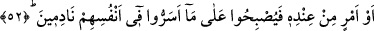
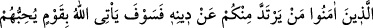
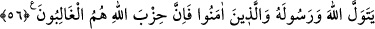

GERÇEK DOSTLUK
Rahman ve Rahîm olan Allah’ın adıyla
51. Ey îman edenler! Yahûdîleri ve hristiyanları dost edinmeyin. Onlar
birbirlerinin dostudurlar. Sizden kim onları dost edinirse, o onlardandır. Allah,
zâlimler topluluğuna yol göstermez.
52. Kalplerinde hastalık bulunanların: “Başımıza bir felâket gelmesinden
korkuyoruz.” diyerek onların arasına koşuştuklarını görürsün. Umulur ki Allah bir
fetih, yahut katından bir emir (iş) getirir de onlar, içlerinde gizledikleri şeye pişman
olurlar.
53. (O zaman) îman edenler: “Bunlar mıdır sizinle beraber olduklarına bütün
güçleriyle yemin edenler?” derler. Onların bütün yaptıkları boşa gitmiştir ve
kaybedenlerden olmuşlardır.
54. Ey îman edenler! Sizden kim dîninden dönerse (bilsin ki) O, öyle bir kavim
getirir ki Allah onları sever ve onlar da O’nu severler. Mü’minlere karşı alçak
gönüllü, kâfirlere karşı ise çok çetindirler. (Onlar) Allah yolunda cihad ederler ve